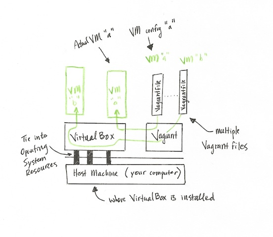
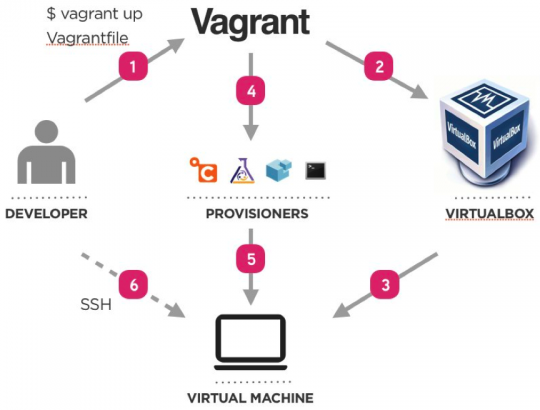
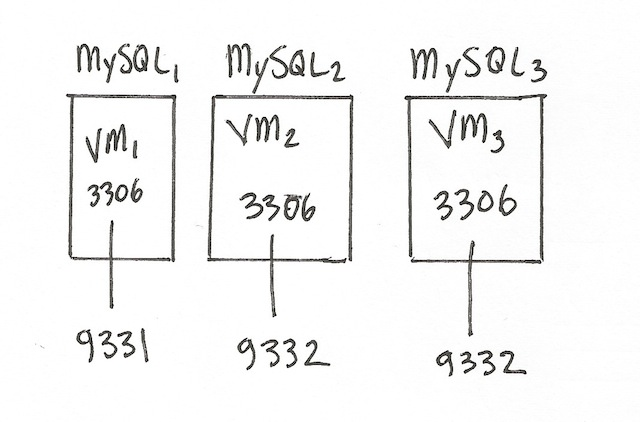

4 sessions
Session 1 - What are servers? What is the internet?
Session 2 - How to interact with servers
Session 3 - How to setup and use NGINX
Session 4 - How to use Vagrant
Session 3 Review

End Goal
Use Vagrant to create a VM,
and setup HTML site & Nodejs site
What is Vagrant?
(visually)
What is Vagrant?
(technically)
Tool to create and configure,
- lightweight
- reproducible
- portable
development environments
.Vagrant Workflow
http://www.digitalforreallife.com/2012/11/boosting-teamwork-with-vagrant/
Where this helps
The Rails Database Driver supports
- Sqlite
- MySQL
- Postgres
All new features have to be tested against each.
Rails Dev Box runs automated tests for each Database
Virtual Box
"Emulates" Hadware
- Monitor
- Network Card, Wifi, IP Addreses
- Hard Drive
- RAM
Terms
- VM stands for "virtual machine"
- Guest Machine = "virtual machine"
Using Vagrant + VirtualBox
Control Vagrant via command Line and config files
Mac Users - terminal
Windows Users - "Git Bash" program
Editing files - Your favorite text editor or Sublime
Vagrant commands
- destroy
- halt
- help
- init
- provision
- reload
- resume
- ssh
- status
- suspend
- up
vagrant help
vagrant helpShows a list of all possible commands
vagrant init
vagrant init [box-name] [box-url]Creates an initial Vagrantfile if one doesn't already exist.
If one doesn't exist ... in your current location
vagrant up
vagrant upCreates and configures guest machines according to your Vagrantfile.
vagrant status
vagrant statusThis tells you the state of the machines Vagrant is managing.
Only works if there's a Vagrantfile in your current location
vagrant provision
vagrant provisionRuns any configured provisioners against the running Vagrant managed machine.
vagrant ssh
vagrant sshThis will SSH into a running Vagrant machine and give you access to a shell.
vagrant reload
vagrant reloadThe equivalent of running a halt followed by an up.
After making any modifications to the Vagrantfile, a reload should be called.
vagrant suspend
vagrant suspendThis suspends the guest machine Vagrant is managing, rather than fully shutting it down or destroying it.
Vagrant saves the Guest Machine's RAM contents on your Hard Drive - therefore requiring space
vagrant resume
vagrant resumeResumes a Vagrant managed machine that was previously suspended, perhaps with the suspend command.
vagrant halt
vagrant haltShuts down the running machine Vagrant is managing.
First attempts to gracefully shut down the machine by running the guest OS shutdown mechanism.
If this fails, Vagrant will "shut off" power to the machine.
vagrant destroy
vagrant destroyStops the running machine Vagrant is managing and destroys all resources that were created during the machine creation process.
As if the Virtual Machine was never there
What do I need to ...
Know
- Vagrant is a command line tool to manage VMs
- The VMs are "built" according to their Vagrantfile
See
- Duplicate VM "state" between devs
- Duplicate production servers locally
Build a VM walk through
Start by having Vagrant create a "Vagrantfile"
vagrant initSimplify Vagrant file
Replace Vagrantfile contents and replace with
Vagrant.configure("2") do |config|
config.vm.box = "intro-to-servers"
config.vm.box_url = "http://files.vagrantup.com/precise64.box"
config.vm.provider :virtualbox do |vb|
# Use VBoxManage to customize the VM. For example to change memory:
vb.customize ["modifyvm", :id, "--memory", "512"]
end
endStart Vagrant
Use the "up" command
vagrant upAgain, this tells Vagrant to create the VM through
VirtualBox according to Vagrantfile configurations.
Vagrant is up
Time to go exploring
The Vagrant Box
How do we SSH into a VM that's on our computer?
Use the Vagrant provided SSH interface
vagrant sshExplore the /vagrant folder
Upon successfully SSH-ing into the VM
Where are we?
pwdVagrant automatically mirrors files in the "Vagrantfile" directory to "/vagrant"
cd /vagrant
ls -als
0 drwxr-xr-x 1 vagrant vagrant 136 Feb 10 04:56 .
4 drwxr-xr-x 24 root root 4096 Feb 10 04:59 ..
0 drwxr-xr-x 1 vagrant vagrant 102 Feb 10 04:57 .vagrant
4 -rw-r--r-- 1 vagrant vagrant 319 Feb 10 04:57 VagrantfileVirtualBox hardware emulation
Assign a static, private IP to VM
To do this, we add the following to the Vagrant file
Vagrant.configure("2") do |config|
config.vm.box = "intro-to-servers"
config.vm.box_url = "http://files.vagrantup.com/precise64.box"
config.vm.provider :virtualbox do |vb|
# Use VBoxManage to customize the VM. For example to change memory:
vb.customize ["modifyvm", :id, "--memory", "512"]
end
config.vm.network :private_network, ip: "192.168.50.4"
endReload vagrant
vagrant reloadWhy would we want a static IP?
Helps while developing software
Mimic multi box or server env. EG,
- IP-1 = database
- IP-2 = backend server
- IP-3 = frontend server
Assigning IP addresses to each Vagrant box make it
easy to configure your app's multi box needs.
VirtuaBox hardware emulation
Port forwarding
Forward HTTP Requests made to
your computer's port 9000
to VM's port 80
Vagrant.configure("2") do |config|
config.vm.box = "intro-to-servers"
config.vm.box_url = "http://files.vagrantup.com/precise64.box"
config.vm.provider :virtualbox do |vb|
# Use VBoxManage to customize the VM. For example to change memory:
vb.customize ["modifyvm", :id, "--memory", "512"]
end
config.vm.network :private_network, ip: "192.168.50.4"
config.vm.network :forwarded_port, guest: 80, host: 9000
endReload Vagrant
vagrant reloadWhy forward ports?
Avoids port collisions. For example, you want to
run 3 versions of MySQL simultaneously.
End of VirtualBox
Free time to
setup HTML or Javascript site
on Vagrant machine